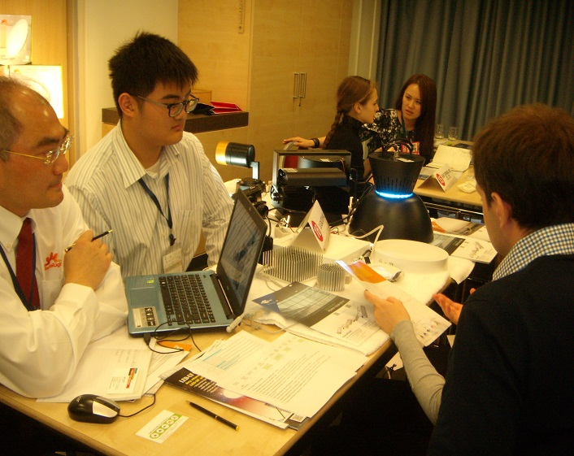
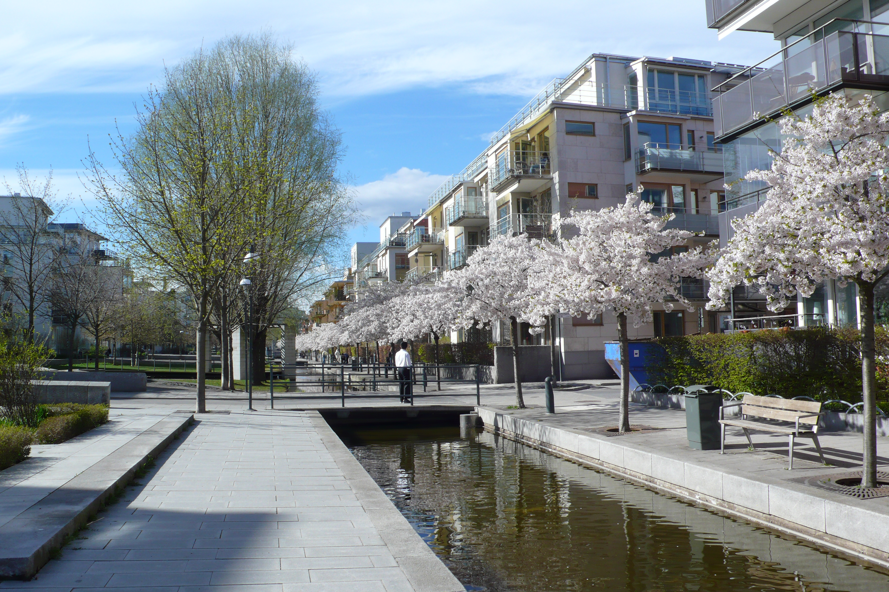
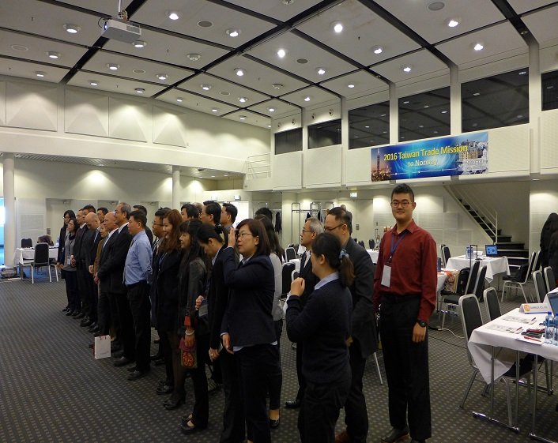
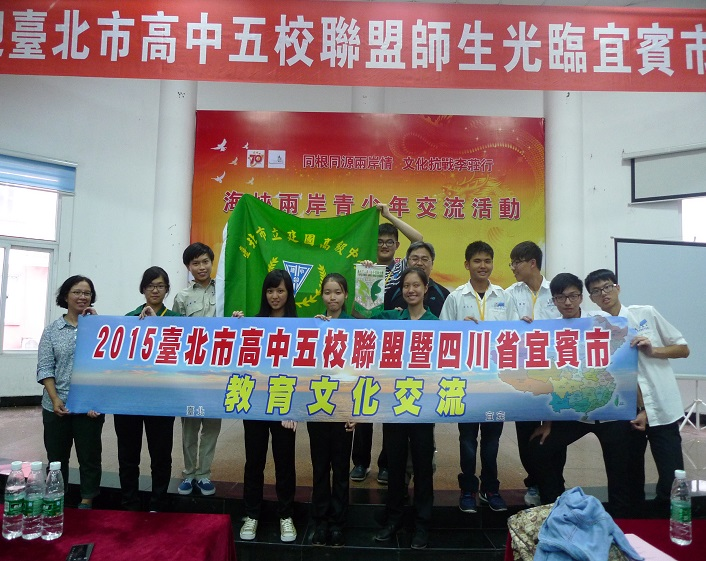
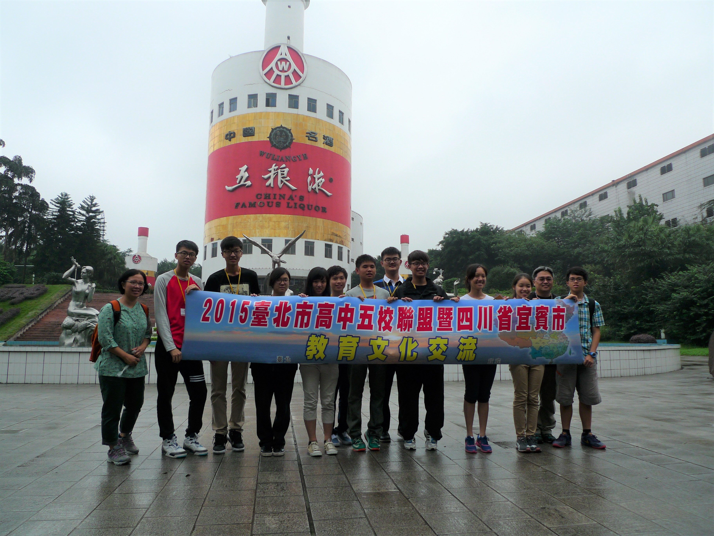
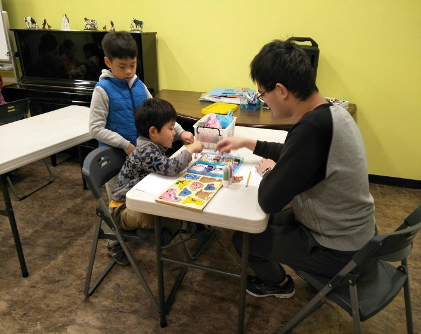
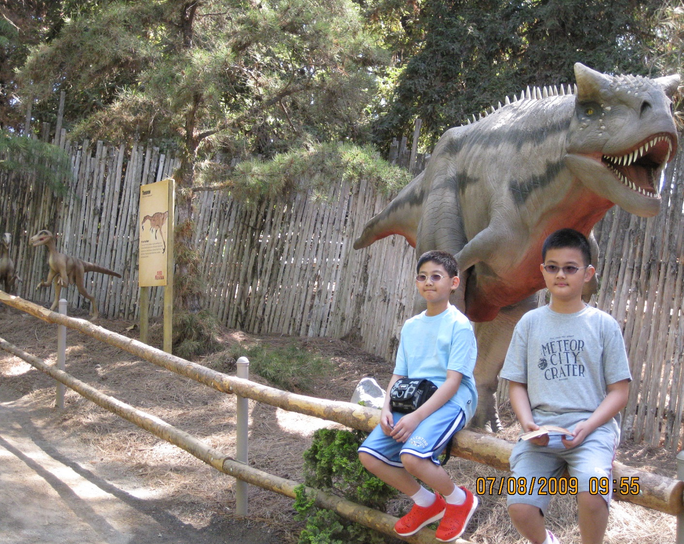

This is Morris Hsieh
Data Scientist & LLM Engineer based in New York City
Christian ✝️ | New Yorker 🗽 | City Walker 🚶 | Food Lover 😋
I'm a Data Scientist
living & working in New York City
- Name: Morris Hsieh (Chun-Mo Hsieh)
- Current Role: Data Scientist @ Permiso Security
- Location: New York, NY 🗽
- Origin: Taipei, Taiwan
Hi, I'm Morris — full name Chun-Mo Hsieh (谢君模). I'm a data scientist and LLM/AI engineer at Permiso Security, building intelligent systems with TypeScript, Python, and AWS. I studied Economics at National Taiwan University and continued my journey at Columbia University in New York.
Beyond work, I'm a Christian (Hebrews 12:1–2), an enthusiastic NYC history buff, a dedicated city walker who explores every borough, and a food lover always hunting for the next great meal. I've traveled to 20+ countries and counting — with NYC as my home base.
"Therefore, since we are surrounded by such a great cloud of witnesses, let us throw off everything that hinders…" — Hebrews 12:1
My Interests
Faith
Christian ✝️ — grounded in Hebrews 12:1–2, active in church community and fellowship.
NYC History
From Dutch New Amsterdam to the modern skyline — I love uncovering stories behind every street corner.
Food & Dining
Exploring NYC's incredible food scene — from dollar slices to Michelin stars, and everything in between.
City Walking
Walking every borough, bridge, and park. The best way to know a city is on foot.
Traveling
20+ countries visited so far — from European trade missions to solo adventures. Goal: 100+.
AI & Data
Building LLM-powered tools, working with AWS, and pushing the frontier of AI security.
My Skills
Python & Data Science
TypeScript / JavaScript
LLM / AI Engineering
AWS & Cloud
Econometrics & Statistics
SQL & Data Pipelines
My Languages
Mandarin
English
Hokkien (Taiwanese)
My Experience
-
Data Scientist & LLM Engineer — Permiso Security
Present · New York, NYBuilding AI security products with TypeScript, Python, and AWS. Working on LLM-powered identity security, runtime intelligence, and AI adoption visibility for enterprise customers.
-
AI Research & Engineering — Columbia University
Graduate StudiesResearch on differential privacy frameworks, LLM applications, and data science projects including privacy-preserving analytics on NYC taxi data.
-
Summer Intern — Sinovation Ventures
July – August 2018 · BeijingAssisted operations for Deecamp AI summer camp (300 students selected nationwide). 40-day internship coordinating a large-scale AI education program.
-
Trade Mission Delegate — TAITRA
2015 & 2016 · EuropeRepresented Taiwan in European trade missions across Russia, Finland, Estonia, Sweden, Poland, Norway, Czech Republic, and Slovenia. B2B conferences with 15+ local companies per city.
My Education
Columbia University in the City of New York
Graduate studies in Data Science & related fields
New York, NY
National Taiwan University — B.A. Economics
Department of Economics, 2017 – 2022
Overall GPA: 4.12 / 4.3
Book Award recipient (top 5% of department) — 3 semesters
Taipei Municipal Jian-guo High School
High School Diploma, 2014 – 2017
Honors & Awards
Book Award
NTU Economics — 3×Top 5% of students in the Department of Economics, National Taiwan University.
Mayor's Award
Taipei City — 2014 & 2017Certificate of Excellence from Taipei City Government for outstanding academic and personal conduct.
Trade Delegate
TAITRA — 2015 & 2016Selected youth representative for Taiwan-Europe trade missions across 8+ countries.
Life in New York City 🗽
New York isn't just where I work — it's where I live, walk, eat, and learn. From the cobblestones of the Financial District to the murals of Bushwick, every neighborhood tells a story. As an NYC history enthusiast, I love connecting today's streets with centuries of transformation.
5 Boroughs
Exploring all five — Manhattan, Brooklyn, Queens, Bronx & Staten Island
Manhattan Walks
Tracing Dutch New Amsterdam through Wall Street, the African Burial Ground, Washington Square Park, and up Fifth Avenue. The grid system is a masterpiece of urban planning.
Brooklyn Bridge & DUMBO
My go-to sunset walk. The bridge opened in 1883 as the world's longest suspension bridge. DUMBO's waterfront views of the Manhattan skyline never get old.
Subway Stories
The subway is NYC's lifeline — 472 stations, 24/7 service, and over a century of history. Each line has its own character, from the express 4/5 to the scenic N through Brooklyn.
Queens: World's Borough
The most ethnically diverse urban area on earth. Amazing food in Flushing's Chinatown, Greek culture in Astoria, and Himalayan restaurants in Jackson Heights.
Hidden History
Favorites: the Stonewall Inn, Tenement Museum, Ellis Island, and the High Line — a freight rail line turned elevated park. NYC's layers of history are endless.
Seasons in the City
Cherry blossoms at Brooklyn Botanic Garden in spring, Shakespeare in the Park in summer, foliage in Central Park in fall, and holiday lights at Rockefeller Center in winter.
My Travel Journal
Europe Trade Mission '16
Visited Ljubljana, Prague, Warsaw, Oslo, and St. Petersburg. Trade fairs in each city with 16+ local companies on average. Explored local businesses, met government officials, and experienced Nordic design culture firsthand.
Europe Trade Mission '15
St. Petersburg, Helsinki (visited Nokia HQ), Tallinn (Estonia trade fair), Stockholm (Hammarby Sjöstad sustainable city tour), and Warsaw. 8-hour B2B conferences with 15+ companies per city.
China Academic Exchange
Cross-strait student exchange between Taiwan, mainland China, Hong Kong & Macau. Visited Wuliangye distillery, attended the 2015 Victory Day Parade, and gave speeches introducing Taiwan's culture.
Beijing AI Summer — Sinovation Ventures
40-day internship coordinating Deecamp, an AI summer camp for 300 top students. An unforgettable experience meeting brilliant minds and exploring Beijing's tech scene.
Countries Visited
Taiwan, China, Japan, South Korea, Russia, Finland, Estonia, Sweden, Poland, Norway, Czech Republic, Slovenia, USA, and more. Goal: 100+ countries.
Travel Philosophy
I believe the best travel combines local food, walking tours, and conversations with locals. Every trip is a chance to learn history, taste culture, and collect stories. Check my Gallery for photos!
My Dining Picks
NYC has the best food scene in the world. Here are some of my favorite spots — from everyday gems to special-occasion dinners. (Add your own photos and reviews in the Gallery!)
Flushing, Queens — Chinese & Taiwanese
The most authentic Chinese food outside of Asia. Hand-pulled noodles, soup dumplings, Taiwanese breakfast at Fay Da, and late-night hot pot. A taste of home in NYC.
East Village — Diverse & Affordable
Ramen shops, Ukrainian diners (Veselka!), Japanese izakayas, and some of the best $1 pizza slices in the city. Perfect for a post-walk meal.
Chinatown — Classic NYC
Dim sum brunches, roast duck over rice, and bubble tea walks through Canal Street. A living piece of NYC immigrant history you can taste.
Jackson Heights — Himalayan & South Asian
Incredible Nepali momos, Indian thali, and Bangladeshi sweets. One subway stop, a dozen countries — that's NYC.
Greenwich Village — Cafés & Brunch
Weekend brunch spots, cozy coffee shops, and the occasional splurge dinner. The neighborhood where Bob Dylan and the Beat Generation once hung out.
Travel Eats — Abroad
From Finnish salmon soup in Helsinki to Sichuan hot pot in Chengdu, I always seek out what locals eat. Food is the best travel souvenir.
My Gallery
-

Trade Fair in Russia
St. Petersburg B2B conference

Visit Nokia HQ
Helsinki, Finland

Hammarby Sjöstad
Sustainable city tour, Stockholm
-

-

Academic Exchange
Yibin Third School conference

Victory Day Parade
2015 China commemoration

Wuliangye Distillery
Yibin, Sichuan
-
-

-

Old Photo
In commemoration of my childhood
Contact Me
Whether it's about data science, NYC recommendations, travel stories, or just saying hello — I'd love to hear from you. Feel free to reach out via email or connect on LinkedIn.